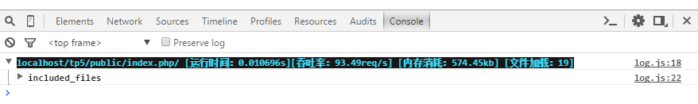

ThinkPHP5.0版本开始，提供了Socket日志驱动用于本地和远程调试。
只需要在配置文件中设置如下：
'log' => [
'type' => 'socket',
'host' => 'slog.thinkphp.cn',
//日志强制记录到配置的client_id
'force_client_ids' => [],
//限制允许读取日志的client_id
'allow_client_ids' => [],
]上面的host配置地址是官方提供的公用服务端，首先需要去申请client_id 。
使用Chrome浏览器运行后，打开审查元素->Console，可以看到如下所示：

SocketLog通过websocket将调试日志打印到浏览器的console中。你还可以用它来分析开源程序，分析SQL性能，结合taint分析程序漏洞。
SocketLog首先需要安装chrome插件，Chrome插件安装页面 （需翻墙）
npm install -g socketlog-server , 运行命令 socketlog-server 即可启动服务。 将会在本地起一个websocket服务 ，监听端口是1229 。socketlog-server > /dev/null & client_id: 在chrome浏览器中，可以设置插件的Client_ID ，Client_ID是你任意指定的字符串。 设置client_id后能实现以下功能：
1，配置allow_client_ids 配置项，让指定的浏览器才能获得日志，这样就可以把调试代码带上线。 普通用户访问不会触发调试，不会发送日志。 开发人员访问就能看的调试日志， 这样利于找线上bug。 Client_ID 建议设置为姓名拼音加上随机字符串，这样如果有员工离职可以将其对应的client_id从配置项allow_client_ids中移除。 client_id除了姓名拼音，加上随机字符串的目的，以防别人根据你公司员工姓名猜测出client_id,获取线上的调试日志。
设置allow_client_ids示例代码：
'allow_client_ids'=>['thinkphp_zfH5NbLn','luofei_DJq0z80H'],force_client_ids配置项，让后台脚本也能输出日志到chrome。 网站有可能用了队列，一些业务逻辑通过后台脚本处理， 如果后台脚本需要调试，你也可以将日志打印到浏览器的console中， 当然后台脚本不和浏览器接触，不知道当前触发程序的是哪个浏览器，所以我们需要强制将日志打印到指定client_id的浏览器上面。 我们在后台脚本中使用SocketLog时设置force_client_ids 配置项指定要强制输出浏览器的client_id 即可。